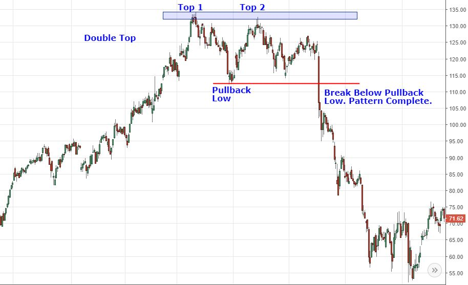
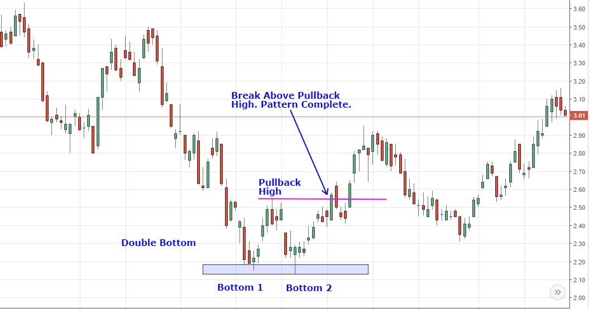

Module: High Dimensional Data – 1 Credit / 15 hours
Competency: Big Data
Author: Jack Pope
Note to instructors:
Given that the material in this module provides a good introduction and motivation for dimension reduction in data sets, and because the subject matter here may not be enough to merit a 1-credit module, this short module should precede or be merged with the “Dimension Reduction methods” module.
Table of Contents
| Unit | Topic |
|---|---|
| 1 | Overview |
| 2 | The Achilles heel of regression |
| 3 | Over-fitting high dimensional data |
| 4 | Detecting the curse of dimensionality |
| 5 | Remedying the curse of dimensionality |
| 6 | Exercises |
Overview
What a waste for the enterprise, to have teams dedicate many hours to developing distributed systems of computation across the enterprise, such as Apache Spark or Hadoop, only to analyze data that is found to be mostly repetitive or noisy. One should better determine in advance the extent of resources that are actually required to analyze the data available.
It may be the case that the researcher is looking for anomalies in abundant data. Preprocessing the data will be time consuming. There may even be a lot of redundant data. Many data fields might contain similar data. Dealing in “big data” makes the problem worse because broadly dispersed unstructured data hinders casual inspection.
To understand the predicaments of high dimensional data, lets for consider some definitions:
Dimensions: features, fields or predictors.
Observations: samples, records, feature vectors.
Feature vector: single observations of a set of features.
Feature matrix: multiple observations of feature vectors.
Longitudinal data: records
Latitudinal data: predictors; features
Situations that compound the predicament of high dimensional data:
More sample data is not available and predictors outnumber records.
Data transformations (linear and non-linear) multiply the number of predictors.
Lags for time series data multiply the number of predictors.
Data transformations, whether linear or non-linear, have the potential to multiply the number of predictors. Consider:
predictorCount = predictorCount x transformationCount
If we additionally want to include lags for each time series record and transformation, then our predictor count could be:
predictorCount = predictorCount x transformationCount x lagCount
One way or another we end up cursed by dimensionality. Predictors exceed observations and/or we over-fit the data and/or we have data fields that are redundant.
The Achilles heel of regression
Regression suffers from too many parameters and multicollinearity with highly dimensional data.
We cannot define a regression model if the number or predictors (p) exceed the number of observations (n), as all p cannot be shown with the data available to be linearly independent or to have significantly distinct patterns of data.
A linear regression is considered “well-defined” when its predictor variables are linearly independent. Consider the classical linear regression:
Y = Xβ + ϵ
If (X′X)−1 must exist for the OLS estimator β = (X′X)-1 X′Y to be valid, then with p > n we cannot use OLS.
An expedient but less than ideal solution is to test several randomly sampled fields of either the original data set or transformations of the original data. With access to more population of data, we can randomly sample more records and predictors. A better solution is to first reduce the dimensionality of the data set.
In the practice of dimension reduction, we can implement various methods of regression for highly dimensional data, including PCA regression (regression on principle components).
Investment portfolio example:
Consider a case of stock market investing, where we want to build a diversified investment portfolio. We want to know how many stocks are enough for the portfolio to have diversified away most of the unsystematic (microeconomic – firm oriented) risk. For the sake of this example, we will ignore systematic (macroeconomic) risk that affects all stocks.
In the attempt to avoid risk, suppose the investor purchases hundreds of corporate stocks. However, many of these stocks exhibit similar daily trading behavior. They are generally up or down in tandem in the same time period. In the statistical evaluation of the portfolio, the respective time series data of these stocks will show multicollinearity, such that beyond a certain number of portfolio holdings, there is no reduction in portfolio volatility.
Research indicates that the optimal number of stocks for a portfolio is approximately 16. (See http://news.morningstar.com/classroom2/course.asp?docId=145385&page=4 ). While other studies conclude that more stocks are needed, the case is clear: multicollinearity among investment time series data indicates that a portfolio can be effectively diversified with fewer holdings.
Related: https://www.investopedia.com/articles/stocks/11/illusion-of-diversification.asp
A small randomly selected portfolio will on average see the same return as the general market, such as represented by the S&P 500 Index. To outperform the market you would need to include at least one non-correlating investment that outperforms the the market.
While high dimensionality in the investment portfolio entails redundant highly correlated investments. I should point out that dimension reduction of such is distinct from the financial concept known as “portfolio optimization.” The latter has to do with finding a portfolio's optimal return/risk combination given various weights of select assets.
Related:
http://www.efficientfrontier.com/ef/900/15st.htm
https://blog.quantopian.com/markowitz-portfolio-optimization-2/
Sample density:
The fewer the input features (dimensions), the less separable the records. To see why, consider in a single time or date dimension two exchange traded funds representing S&P 500 (SPY) and US Treasury bonds (TLT):
---0.3---0.5---0.7---0.9---
SPY
TLT
In this one dimension, a single observation in time, the objects of interest have the same axis point and are, therefore, indistinguishable. Now if we add a second dimension of price, the objects become separable in the 2D space, as seen below.
-
0.9- SPY
-
0.7-
- TLT
0.5-
-
---0.3---0.5---0.7---0.9---
Yet, even in two dimensions there are going to be patterns that are not linearly separable. SPY will overlap with the Dow Jones Industrial Average ETF (DIA) on some occasions. Too look for separation, we can add more features, such as trade volume, dividends,...
At this point we may be encouraged to further expand dimensions to linearly separate a tight cluster of data. However, the added feature dimension reduces exponentially the percentage coverage of the feature range. We have created “sparseness” in the feature space, in which population data is not represented.
As we increase dimensions D over I discrete intervals with n data samples, the “sample density” is:
density = n / ID
For example, consider the density of 8 stocks over 10 time periods in D dimensions:
| D | n | I | density |
|---|---|---|---|
| 1 | 8 | 10 | 0.8 |
| 2 | 8 | 10 | 0.08 |
| 3 | 8 | 10 | 0.008 |
This implies that additional dimensions result in each sample having a smaller footprint in the dimensional space.
Thus, to train data to represent 15% of a 1D feature range, for 2D we need a sample that represents 0.151/2 or 38.7% of the population. For 3D, we would need 53% of the population. At some point we end up over-fitting a model to 100% of the population data, which makes the model unsuitable for interpreting new data.
A non-linear classifier in fewer dimensions will not necessarily get out of the woods either, as we can still run into over-fitting problems. The classifier may still be dependent on specific data without the flexibility to generalize.
Lets say we go beyond 3D by adding various transformations on the sample data, such as moving averages and lags. We are attempting to differentiate feature vectors that are similar among the sample data. However, when testing with new unforeseen data then model fails. Having been reminded of the sparsity problem from adding dimensions, we instead seek more sample data. The problem is that the population data is too vast or inaccessible. For example, for the purposes of prediction, we do not have the luxury of sampling future data.
A better approach is to use a classifier of relatively few dimensions among uncorrelated data and an acceptable threshold of error.
Geometrically, as dimensions increase, vertices move away from the origin and towards the perimeter of the feature space, making distances between vertices less meaningful. A similar matter is the volume of the hypersphere as it relates to dimensions. More: https://en.wikipedia.org/wiki/Volume_of_an_n-ball.  For a given dimension d, consider that the minimum and the maximum distances may become indiscernible such that:
For a given dimension d, consider that the minimum and the maximum distances may become indiscernible such that:
lim d → ∞ E ( dist max ( d ) − dist min ( d ) dist min ( d ) ) → 0
Accordingly, classification methods that rely on distance measures, such as KNN, will be compromised by high dimension data.
More: https://link.springer.com/chapter/10.1007%2F3-540-49257-7_15
Over-fitting high dimensional data
Now, instead of having a portfolio of with dimensions comprised of distinct stock holdings, we consider a single stock with dimensions as distinct price patterns in time series data.
It is commonly observed that certain price patterns in time series are indicative of later trends. One such pattern is called a “double bottom” and exhibits a “W” shaped pattern. This pattern tends to precede price increases. A contrary pattern is the double top, which resembles the letter “M” and tends to precede price drops.
The following graphics of W and M patterns are from : https://www.investopedia.com/university/charts/charts4.asp


We can affect machine learning to recognize such patterns. To do so, we need to create a classifier that corresponds to the defining points of a pattern. For example, both the M and W patterns can be minimally represented with just five points on an XY (price x time) plane.
With standardized price and time data, each vertex of the pattern W can be represented by (X,Y) in centile units, from 0.01 to 1. So, each price data point P is standardized as a percentage of the range between the maximum and minimum prices in the sample, and any given date D is described as a percentage of elapsed dates in the sample. (If the data is erratic, it might first be smoothed using a moving average.) Then, each of the five pattern points for one particular shape of W and scale looks like:
Yi = (Pi - Pmin) / (Pmax - Pmin)
Xi = Di / Dn
To train a classifier for M and W, we can use a variety of sample W and M patterns. For example, the W pattern could be the average of hundreds of variously shaped W patterns.
The basic pattern descriptor applicable to both M and W pattern classes:
Pattern = { (X1, Y1), (X2, Y2), (X3, Y3), (X4, Y4), (X5, Y5) }
The condition for pattern W is:
if(Y2 < Y1 AND Y3 > Y2 AND Y4 < Y3 AND Y5 > Y4): W
The condition for pattern M is just the opposite:
if(Y2 > Y1 AND Y3 < Y2 AND Y4 > Y3 AND Y5 < Y4): M
Of course, these simplistic conditions are bound to be inaccurate without accommodating a certain deviation from each point. For example:
if((Y2 > Y1 AND Y3 < Y2 AND Y4 > Y3 AND Y5 < Y4) OR
((Y2 + 0.01) > Y1 AND Y3 < (Y2 + 0.01) AND (Y4 + 0.01) > Y3 AND Y5 < (Y4 + 0.01))): M
We could also included a scaling factor for accommodating the patterns at various scales.
Testing the 5 points with 10 shape variations and 10 scales would make for 5 x 10 10 or 500 feature combinations per time series window per stock symbol data set. Provided the pattern's scale covers 28 trading days, a year's worth of times series data (280 business days) entails 14,000 point comparisons, for just that one scale. With all 10 scales and several years of training data, classifier training could require some patience.
Generalization versus over-fitting:
By allowing the classifier to match general features or pattern variations, its can match unforeseen data. On the other hand, if we try to train the classifier for any conceivable data point, we are really just implementing a system of pattern matching that is no different than a look-up table. Such a system will not work for prediction since future price patterns have not yet been recorded in the look-up table. This is a case of over-fitting, as the classifier is unable to generalize about unforeseen data.
While the optimal number of dimensions depends on the problem at hand, the general relationship between classifier performance and dimensions will be a curve skewed to the left.

Detecting the curse of dimensionality
Examine regression models have a good fit. Good forecasts do not necessarily come from models having a good fit.
Removing some variables reduces regression standard errors.
Variable pairs generally show strong correlation.
Similarly, one independent variable exhibits a high r-squared with other independent variables.
Parameter estimates vary significantly between sample data sets.
Standard errors on regression coefficients.
Where there is multicollinearity and no pairwise correlations are high, there may be joint dependencies that are multi-collinear. Testing for such requires exponentially more iterations as we additionally test for joint dependencies for each independent variable pair.
Test forecast efficacy having removed independent variables that are weakly correlated to the dependent. This will at least clear away some redundancy.
Consider Variance Inflation Factors (See https://cran.r-project.org/web/packages/olsrr/vignettes/regression_diagnostics.html )
Remedying the curse of dimensionality
Let this this section be a segue to the Dimension Reduction module. A few general solutions to reduce dimensionality as well as the variance of regression coefficients include:
Make sure dimensions do not outnumber observations.
Employ dimension reduction techniques, such as PCA and SOM.
Employ feature selection algorithms.
Beware classifiers that over-fit the data.
Cross validate out of sample data.
Increase sample size to reduce MSRE.
Revise the model to:
- Use data that is logically more relevant.
- Look for categorically illogical variables to drop.
- Use other data transformations.
Principal Component Analysis (PCA) aims to produce a subset of uncorrelated linearly separable features from the original feature matrix. The resulting sub-feature set may or may not be optimal for classification.
Other Internet resources
http://rsta.royalsocietypublishing.org/content/367/1906/4237
http://featureselection.asu.edu/algorithms.php
Exercises
In these exercises we will test for the curse of dimensionality.
On web sites such as Google Finance or Yahoo Finance, you can download the daily closing prices for most stock symbols. Download one year of data for ten symbols of your choosing. Additionally, download data for the symbol SPY. Save each download in a separate Cmma Separated Value (.csv) file.
Using the Python Programming language and your stock download files, compete the following tasks:
Standardize all data to values between 0 and 1 for the dates downloaded.
Create a correlation matrix for the data of the eleven symbols. Are there clues to multicollinearity in the correlation matrix?
Compute pair-wise r-squared among the independent variables. Does your correlation matrix corroborate these coefficients?
Assume that each symbol other than SPY is a dimension of SPY. Using SPY as the dependent variable, compute multivariate regression parameters from the other (independent) symbols (variables). Redo the regression using the five least correlated symbols. Then repeat this again with the five most correlated symbols. What do can you deduce about these three regression models?
Assume that each symbol other than SPY is a dimension of SPY. Generate the average distance between each feature vector (record at each date). Next generate the average distance between each feature vector using the five least correlated symbols. Repeat this with the five most correlated symbols. What do can you deduce about these three distance totals?
Upload your code, question responses and any supporting documentation.